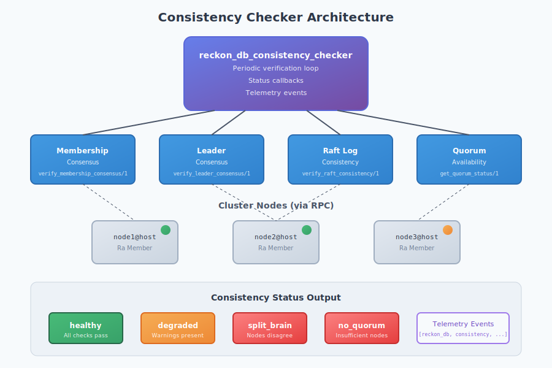
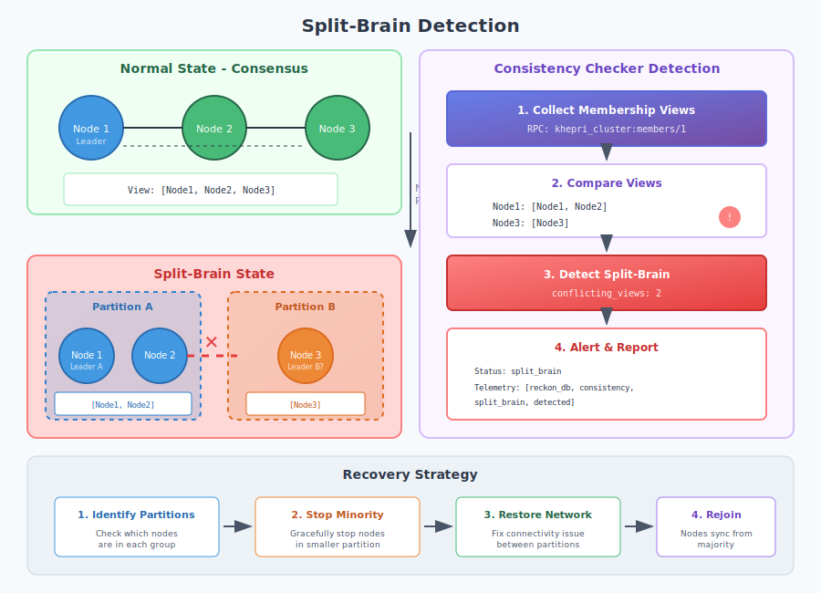

Cluster Consistency & Split-Brain Prevention
View SourceThis guide covers reckon-db's cluster consistency mechanisms, split-brain detection, active health probing, and quorum management. These systems work together to ensure data integrity in distributed deployments.
Overview
Distributed event stores face fundamental challenges from the CAP theorem. reckon-db prioritizes Consistency and Partition tolerance, using Raft consensus via Khepri/Ra. However, network partitions can still cause split-brain scenarios that require detection and mitigation.
Architecture

The Split-Brain Problem
What is Split-Brain?
Split-brain occurs when network partitions cause nodes to form independent clusters, each believing it is the authoritative source. This can lead to:
- Divergent event streams - Different events written to the same stream on different partitions
- Lost events - Events written to minority partition may be discarded on merge
- Inconsistent state - Projections built from divergent streams

How reckon-db Prevents Split-Brain
- Raft Consensus - Khepri/Ra requires quorum for writes
- Deterministic Coordinator - Lowest node name becomes cluster coordinator
- Active Detection - Consistency checker identifies partition scenarios
- Health Probing - Fast detection of node failures
Consistency Checker
The reckon_db_consistency_checker module provides continuous cluster health verification.
Starting the Checker
%% Started automatically with store in cluster mode
%% Or manually configure check interval (default: 5000ms)
application:set_env(reckon_db, consistency_check_interval, 3000).Consistency Status Levels
| Status | Description | Action Required |
|---|---|---|
healthy | All checks passing, full consensus | None |
degraded | Warnings present, but operational | Investigate |
split_brain | Nodes disagree on membership/leader | Critical - resolve partition |
no_quorum | Insufficient nodes for operations | Critical - restore nodes |
Forcing Immediate Check
%% Force check and get result
Result = reckon_db_consistency_checker:check_now(my_store),
%% #{status => healthy,
%% checks => #{membership => ..., leader => ..., raft => ..., quorum => ...},
%% timestamp => 1703000000000,
%% duration_us => 1234}Registering Status Callbacks
%% Get notified when status changes
CallbackRef = reckon_db_consistency_checker:on_status_change(my_store, fun(Status) ->
case Status of
healthy ->
logger:info("Cluster health restored");
degraded ->
logger:warning("Cluster degraded - investigate"),
alert_ops_team(degraded);
split_brain ->
logger:error("SPLIT-BRAIN DETECTED!"),
emergency_alert(split_brain),
pause_writes();
no_quorum ->
logger:error("Quorum lost - operations unavailable"),
emergency_alert(no_quorum)
end
end).
%% Remove callback when done
reckon_db_consistency_checker:remove_callback(my_store, CallbackRef).Verification Checks
1. Membership Consensus
Verifies all nodes agree on cluster membership.
{ok, Result} = reckon_db_consistency_checker:verify_membership_consensus(my_store).
%% #{status => consensus,
%% nodes_checked => 3,
%% nodes_responded => 3,
%% failed_nodes => [],
%% consistent_view => [{my_store, 'node1@host'}, ...]}
%% Or if split-brain detected:
%% #{status => split_brain,
%% conflicting_views => 2,
%% views => #{'node1@host' => [...], 'node2@host' => [...]}}2. Leader Consensus
Verifies all nodes agree on the current Raft leader.
{ok, Result} = reckon_db_consistency_checker:verify_leader_consensus(my_store).
%% #{status => consensus,
%% leader => 'node1@host',
%% nodes_checked => 3,
%% nodes_responded => 3}
%% Or if disagreement:
%% #{status => no_consensus,
%% leaders_reported => ['node1@host', 'node2@host']}3. Raft Log Consistency
Verifies follower nodes have consistent Raft log state.
{ok, Result} = reckon_db_consistency_checker:verify_raft_consistency(my_store).
%% #{status => consensus,
%% leader => 'node1@host',
%% terms => [5],
%% terms_consistent => true,
%% commit_index_range => {100, 102},
%% max_commit_lag => 2}4. Quorum Status
Checks if sufficient nodes are available for operations.
{ok, Result} = reckon_db_consistency_checker:get_quorum_status(my_store).
%% #{has_quorum => true,
%% total_nodes => 3,
%% available_nodes => 3,
%% required_quorum => 2,
%% quorum_margin => 1,
%% can_lose => 1}Health Probing
The reckon_db_health_prober module implements active health checks for faster failure detection.

Why Active Probing?
Passive monitoring via net_kernel:monitor_nodes/1 can take 60+ seconds to detect failures (depending on net_ticktime). Active probing provides:
- Faster detection - Configurable intervals (default: 2 seconds)
- Failure threshold - Avoid false positives from transient issues
- Recovery detection - Know when failed nodes come back
Probe Types
| Type | Speed | Depth | Use Case |
|---|---|---|---|
ping | Fastest | Shallow | Network connectivity only |
rpc | Medium | Medium | Process responsiveness |
khepri | Slowest | Deepest | Store health verification |
Configuring the Prober
%% In sys.config
{reckon_db, [
{health_probe_interval, 2000}, %% 2 seconds between probes
{health_probe_timeout, 1000}, %% 1 second timeout per probe
{health_failure_threshold, 3}, %% 3 failures before declaring failed
{health_probe_type, rpc} %% rpc probe type
]}
%% Or dynamically
reckon_db_health_prober:configure(my_store, #{
probe_interval => 1000,
failure_threshold => 2
}).Node Status
%% Check specific node
{ok, Status} = reckon_db_health_prober:get_node_status(my_store, 'node2@host').
%% healthy | suspect | failed | unknown
%% Check all nodes
AllStatus = reckon_db_health_prober:get_all_status(my_store).
%% #{'node2@host' => healthy, 'node3@host' => suspect}Failure and Recovery Callbacks
%% Get notified when nodes fail
FailedRef = reckon_db_health_prober:on_node_failed(my_store, fun(Node) ->
logger:error("Node ~p failed health checks", [Node]),
remove_from_load_balancer(Node)
end).
%% Get notified when nodes recover
RecoveredRef = reckon_db_health_prober:on_node_recovered(my_store, fun(Node) ->
logger:info("Node ~p recovered", [Node]),
add_to_load_balancer(Node)
end).Quorum Management
Understanding Quorum
Raft consensus requires a majority (quorum) of nodes to agree on operations:
| Cluster Size | Quorum Required | Nodes Can Fail |
|---|---|---|
| 1 | 1 | 0 |
| 2 | 2 | 0 |
| 3 | 2 | 1 |
| 4 | 3 | 1 |
| 5 | 3 | 2 |
| 7 | 4 | 3 |
Recommendation: Use odd-numbered clusters (3, 5, 7) for optimal fault tolerance.
Quorum Loss Behavior
When quorum is lost:
- Writes blocked - Cannot append events
- Reads may work - If local data available (stale)
- Subscriptions pause - No new events delivered
%% Check before critical operations
case reckon_db_consistency_checker:get_quorum_status(my_store) of
{ok, #{has_quorum := true, can_lose := N}} ->
logger:info("Quorum healthy, can lose ~p more nodes", [N]),
proceed_with_operation();
{ok, #{has_quorum := false}} ->
logger:error("No quorum - operation blocked"),
{error, no_quorum}
end.Integration Patterns
1. Startup Verification
%% In application startup
start_link() ->
{ok, Pid} = reckon_db:start_store(my_store, #{mode => cluster}),
%% Wait for cluster health before accepting traffic
case wait_for_healthy(my_store, 30000) of
ok ->
logger:info("Store healthy, accepting traffic"),
{ok, Pid};
{error, Reason} ->
logger:error("Store unhealthy: ~p", [Reason]),
{error, cluster_unhealthy}
end.
wait_for_healthy(StoreId, Timeout) ->
Deadline = erlang:monotonic_time(millisecond) + Timeout,
wait_for_healthy_loop(StoreId, Deadline).
wait_for_healthy_loop(StoreId, Deadline) ->
case reckon_db_consistency_checker:get_status(StoreId) of
{ok, healthy} ->
ok;
{ok, Status} ->
Now = erlang:monotonic_time(millisecond),
case Now < Deadline of
true ->
timer:sleep(1000),
wait_for_healthy_loop(StoreId, Deadline);
false ->
{error, {timeout, Status}}
end;
{error, not_running} ->
timer:sleep(500),
wait_for_healthy_loop(StoreId, Deadline)
end.2. Load Balancer Integration
%% Remove unhealthy nodes from load balancer
init([]) ->
reckon_db_health_prober:on_node_failed(my_store, fun(Node) ->
haproxy_api:disable_server(Node)
end),
reckon_db_health_prober:on_node_recovered(my_store, fun(Node) ->
haproxy_api:enable_server(Node)
end),
{ok, #state{}}.3. Circuit Breaker Pattern
-record(state, {
circuit :: closed | open | half_open,
failures :: non_neg_integer(),
last_attempt :: integer()
}).
handle_call({append, Stream, Events}, From, #state{circuit = open} = State) ->
%% Check if should try again
case should_retry(State) of
true ->
try_append(Stream, Events, From, State#state{circuit = half_open});
false ->
{reply, {error, circuit_open}, State}
end;
handle_call({append, Stream, Events}, From, State) ->
try_append(Stream, Events, From, State).
try_append(Stream, Events, _From, State) ->
case reckon_db_consistency_checker:get_status(my_store) of
{ok, healthy} ->
Result = reckon_db_streams:append(my_store, Stream, any, Events),
{reply, Result, State#state{circuit = closed, failures = 0}};
{ok, Status} when Status =:= split_brain; Status =:= no_quorum ->
NewState = State#state{
circuit = open,
failures = State#state.failures + 1,
last_attempt = erlang:monotonic_time(millisecond)
},
{reply, {error, {cluster_unhealthy, Status}}, NewState};
_ ->
{reply, {error, status_unknown}, State}
end.Telemetry Events
Consistency Checker Events
%% Check completed
[reckon_db, consistency, check, complete]
%% Measurements: #{duration_us => integer()}
%% Metadata: #{store_id => atom(), status => atom(), checks => map()}
%% Status changed
[reckon_db, consistency, status, changed]
%% Measurements: #{system_time => integer()}
%% Metadata: #{store_id => atom(), old_status => atom(), new_status => atom()}
%% Split-brain detected
[reckon_db, consistency, split_brain, detected]
%% Measurements: #{system_time => integer()}
%% Metadata: #{store_id => atom(), result => map()}Health Prober Events
%% Probe cycle completed
[reckon_db, health, probe, complete]
%% Measurements: #{duration_us => integer(), success_count => integer(), failure_count => integer()}
%% Metadata: #{store_id => atom()}
%% Node declared failed
[reckon_db, health, node, failed]
%% Measurements: #{system_time => integer(), consecutive_failures => integer()}
%% Metadata: #{store_id => atom(), node => node()}
%% Node recovered
[reckon_db, health, node, recovered]
%% Measurements: #{system_time => integer()}
%% Metadata: #{store_id => atom(), node => node()}Example Telemetry Handler
setup_telemetry() ->
telemetry:attach_many(
<<"cluster-health-handler">>,
[
[reckon_db, consistency, split_brain, detected],
[reckon_db, health, node, failed]
],
fun handle_cluster_event/4,
#{}
).
handle_cluster_event([reckon_db, consistency, split_brain, detected],
_Measurements, #{store_id := StoreId}, _Config) ->
pagerduty:trigger(#{
severity => critical,
summary => io_lib:format("Split-brain detected in ~p", [StoreId])
});
handle_cluster_event([reckon_db, health, node, failed],
#{consecutive_failures := Failures},
#{store_id := StoreId, node := Node}, _Config) ->
prometheus_counter:inc(node_failures_total, [StoreId, Node]),
slack:post(ops_channel,
io_lib:format("Node ~p failed after ~p probes", [Node, Failures])).Troubleshooting
Common Issues
| Symptom | Likely Cause | Resolution |
|---|---|---|
Frequent degraded status | Network latency | Increase probe timeout |
no_quorum after restart | Nodes not discovered | Check UDP multicast |
split_brain detected | Network partition | Identify partition, restore connectivity |
| Slow recovery detection | High failure threshold | Reduce threshold (with caution) |
Diagnostic Commands
%% Full cluster status
{ok, Result} = reckon_db_consistency_checker:check_now(my_store).
io:format("Status: ~p~n", [maps:get(status, Result)]).
io:format("Checks: ~p~n", [maps:get(checks, Result)]).
%% Node health details
AllStatus = reckon_db_health_prober:get_all_status(my_store).
maps:foreach(fun(Node, Status) ->
io:format(" ~p: ~p~n", [Node, Status])
end, AllStatus).
%% Quorum margin
{ok, Quorum} = reckon_db_consistency_checker:get_quorum_status(my_store).
io:format("Can lose ~p more nodes~n", [maps:get(can_lose, Quorum)]).Recovery Procedures
Split-Brain Recovery
- Identify partitioned nodes - Check which nodes are in each partition
- Stop minority partition - Gracefully stop nodes in smaller partition
- Restore connectivity - Fix network issues
- Restart stopped nodes - They will rejoin and sync from majority
- Verify consistency - Check events weren't lost
%% After recovery, force verification
Result = reckon_db_consistency_checker:check_now(my_store),
case maps:get(status, Result) of
healthy -> logger:info("Recovery successful");
Other -> logger:error("Still unhealthy: ~p", [Other])
end.Configuration Reference
Consistency Checker
| Setting | Default | Description |
|---|---|---|
consistency_check_interval | 5000 | Milliseconds between checks |
| (minimum enforced) | 1000 | Minimum allowed interval |
Health Prober
| Setting | Default | Description |
|---|---|---|
health_probe_interval | 2000 | Milliseconds between probe cycles |
health_probe_timeout | 1000 | Timeout for each probe (ms) |
health_failure_threshold | 3 | Consecutive failures before failed |
health_probe_type | rpc | Probe type: ping, rpc, or khepri |
Academic References
- Ongaro, D. and Ousterhout, J. (2014). In Search of an Understandable Consensus Algorithm (Raft). USENIX ATC 2014.
- Brewer, E. (2012). CAP Twelve Years Later: How the "Rules" Have Changed. IEEE Computer, 45(2), 23-29.
- Kleppmann, M. (2017). Designing Data-Intensive Applications. O'Reilly Media. Chapter 9: Consistency and Consensus.
See Also
- Storage Internals - Khepri/Ra replication details
- Memory Pressure - Resource management
- Subscriptions - Event delivery in clusters